Fill Pattern command
Use the Fill Pattern command  to create a pattern of a selected feature(s) that completely fills a defined region(s).
The fill pattern can be rectangular, staggered or radial. Each fill pattern type has
a set of options to define the pattern array. Occurrences can be suppressed manually
or with a pattern boundary offset value. Fill patterns can be edited to produce the
desired result.
to create a pattern of a selected feature(s) that completely fills a defined region(s).
The fill pattern can be rectangular, staggered or radial. Each fill pattern type has
a set of options to define the pattern array. Occurrences can be suppressed manually
or with a pattern boundary offset value. Fill patterns can be edited to produce the
desired result.
Fill pattern types
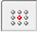 |
Rectangular |
|
Stagger |
|
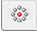 |
Radial |
Fill Patterning workflow
-
Select feature(s) to pattern.
-
Choose Pattern group→Rectangular Pattern list→Fill Pattern.
-
Click region(s) to pattern fill.
-
Press the Enter key, click the green check mark, or right-click to place the pattern fill preview.
-
On the pattern fill command bar, select the pattern fill type. Rectangular fill is the default.
-
On the command bar, set the desired pattern options.
-
The origin of the feature(s) to pattern defaults to the centroid. Using the steering wheel, you can modify the origin, define the direction of the first pattern row, and edit the spacing values. You can also click the Edit Profile handle to modify the pattern region.
-
Right-click or click the green check mark to place the fill pattern.
-
Click or press the Esc key to terminate the pattern fill command.
Rectangular fill
This pattern type fills a region(s) with rows and columns of occurrences. It is the default pattern fill type.
You enter two values to define row and column spacing. Use the Tab key to alternate between the spacing value boxes.
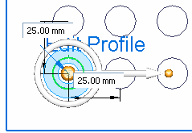
Change the direction vector for the pattern row by clicking the steering wheel torus and then enter an angular value. In a rectangular fill pattern, the columns are always aligned perpendicular to the direction of the rows.
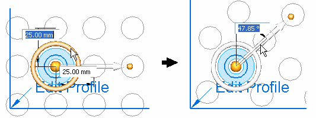
Stagger fill
This pattern type fills a region(s) with staggered rows of occurrences.
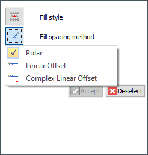
Polar, Linear Offset, and Complex Linear Offset are the options to control the staggered fill pattern.
Using the Polar option, (A) is the spacing of occurrences on the first row. (B) defines the offset row. The spacing is defined by an angle of rotation with a radius of the row spacing value.
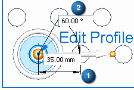
Using the Linear Offset option, (C) is the offset spacing of occurrences above (and below) the first row. (D) defines the spacing between rows.
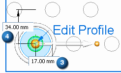
Radial fill
This pattern type fills a region(s) with radial rings of occurrences.
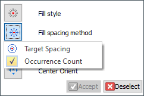
The Instance Count spacing option provides control of how many occurrences count box (A) per ring. The radial spacing of occurrences is controlled with the (B) value box.
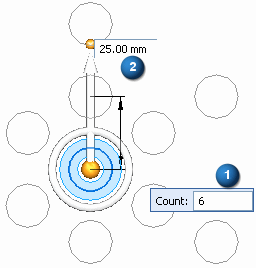
The Target Spacing option provides control of the radial spacing of occurrences (C) and the occurrence spacing on each ring (D). Target spacing is an approximate value since the actual value must be rounded to exactly fit all occurrences on each ring.
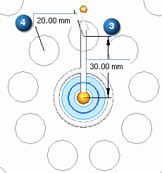
Center Orient
The Center Orient option is available with radial fill only.
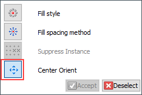
This option provides control of the orientation of the radial occurrences. When this option is selected, the steering wheel changes and an arrow inside the torus displays. This arrow orients the occurrences.
The image below shows the steering wheel display with center orient Off.
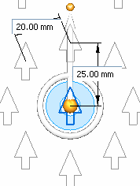
The images below show the steering wheel display when center orient is On. The steering wheel displays a knob that lies on the torus and an arrow that lies inside the torus. Select either the knob or arrow to change the orientation of occurrences.
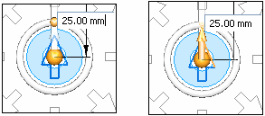
Notice that as the center orient angular value changes, the first occurrence (colored orange for clarification) on the direction vector rotates by that value.
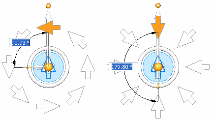
Editing a fill pattern
Fill patterns can be edited at any time. Select the fill pattern to edit by either selecting an occurrence in the pattern or by selecting the pattern feature in PathFinder.
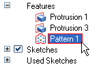
Click the text handle Fill Pattern to edit the pattern.
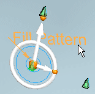
At this point, you can make any changes to the selected pattern fill. You can even change the fill pattern type.
Add a feature to the parent features set of an existing pattern
You can add or remove parent features that are patterned.
Workflow
-
Edit the pattern.
-
Click the Add to pattern button on the command bar.
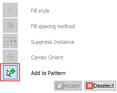
-
Select feature to add or remove from parent features.
-
Right-click (or green check mark) for a preview. Right-click (or green check mark) to accept.
Edit a pattern profile
When a fill pattern is created, the patterned region boundaries are copied into the pattern fill profile. The pattern fill profile is not associative to the original sketch/model edges. The pattern profile can be edited.
To edit the pattern profile click the text handle “Edit Profile”.
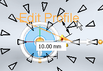
When an edit is made, the pattern profile is changed but not the original sketch/model edges. When the edit is complete, the pattern updates to fill the updated profile region. When in the edit profile mode, an icon is displayed in the upper right portion of the window . Click this icon to finish the edit. The edited pattern profile must produce a valid closed region. An error results when there is a problem with the profile. If the profile is not corrected and the update is accepted, the fill pattern is deleted.
In PathFinder, turn off the display of the sketch region when editing a pattern profile. If both the pattern profile and sketch are displayed simultaneously, editing the profile pattern may be confusing. For example: If you delete a pattern profile element, the display of the sketch element remains and it appears that the deleted element is still there.
Suppressing occurrences
Occurrences in a pattern fill can be suppressed (or hidden).
Workflow
-
On the Fill pattern command bar, click the Suppress Instance button.
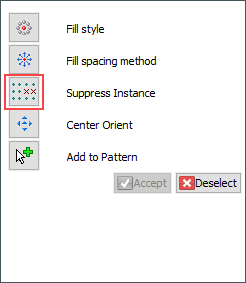
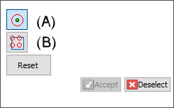
The default setting is the Use Occurrence Footprint (A) method. This setting uses the footprint (2D profile) of the patterned object to determine whether the object is inside the fill region. The Allow Boundary Touching (B) option controls whether to suppress instances whose footprint touches the fill boundary.
To use the Occurrence Marker method, turn the Use Occurrence Footprint (A) off. The occurrence marker method is where the occurrence profile centroid is used to determine if the occurrence touches the boundary.
-
All unsuppressed occurrences display with a green dot. Click the occurrence to suppress. The suppressed occurrences display with a red circle. Click a suppressed occurrence and it becomes unsuppressed.
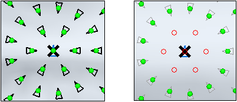
-
On the suppress command bar, click Reset to return all occurrences to unsuppressed.
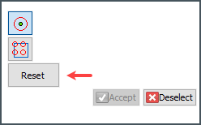
-
To suppress occurrences that overlap the region boundaries, enter an offset value in the value box (A). This value is the normal distance between the occurrence and the boundary. A negative value (B) suppresses occurrences inside the region boundary by the offset value. A positive value (C) displays occurrences outside the region boundary by the offset value.
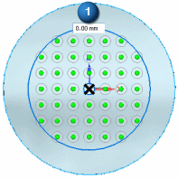
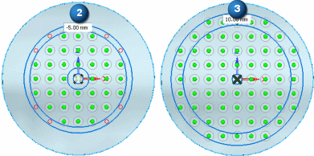
Touching or overlapping pattern features
When the pattern fill array is defined, an occurrence is placed at every location specified by the pattern spacing or angular values. However a patterned feature may not be placed at that occurrence if that feature touches or overlaps the adjacent feature. In the example below, (A) rectangular pattern fill array was 10 x 10 and (B) was changed to 7 x 7. The occurrence spacing in (B) caused the pattern parent to overlap other occurrences. The pattern fill command determines which occurrences to place a pattern parent on in order to produce a pattern result.
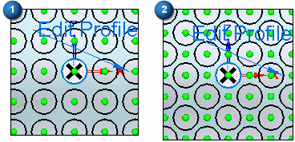